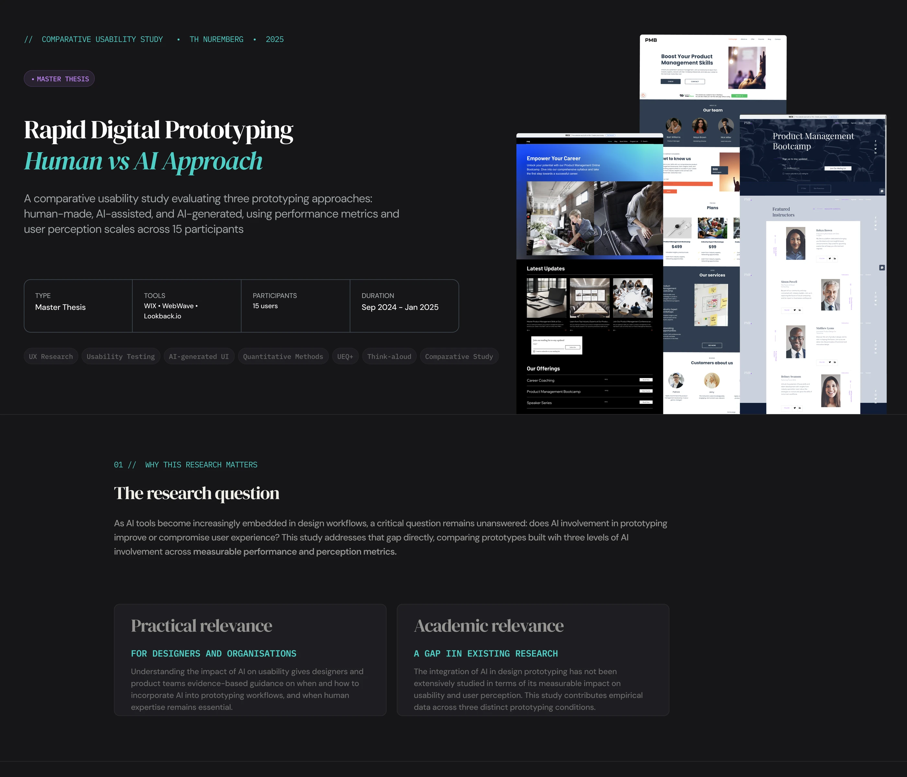
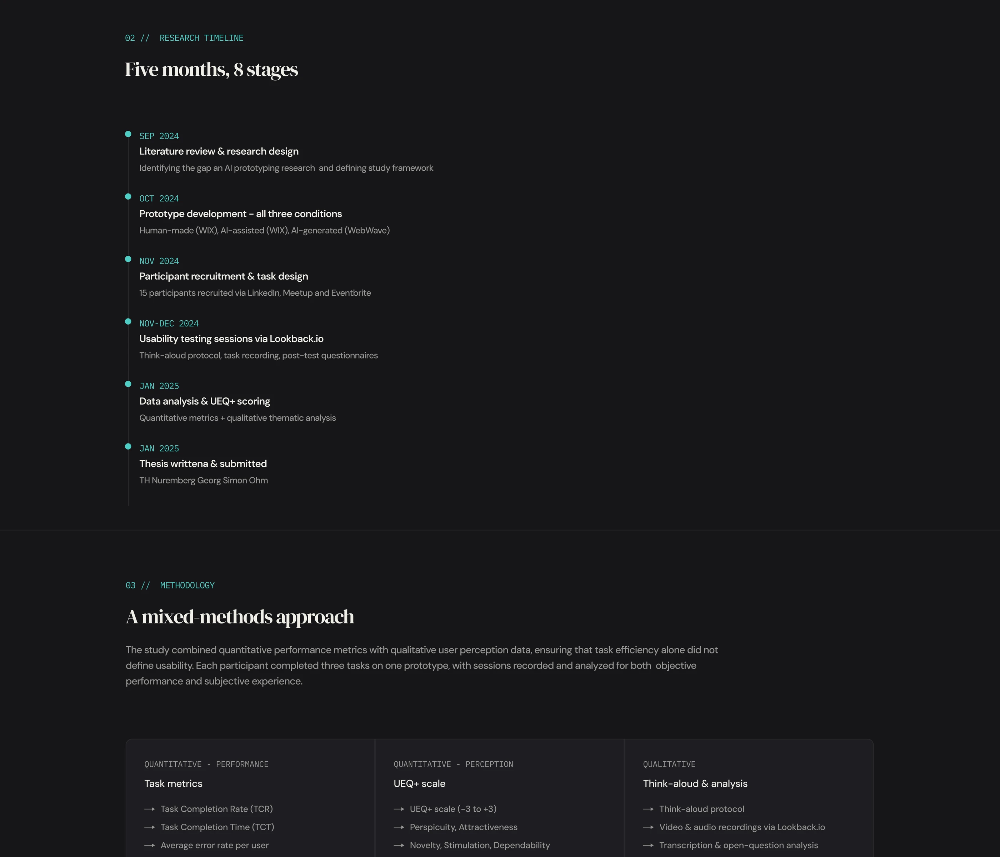
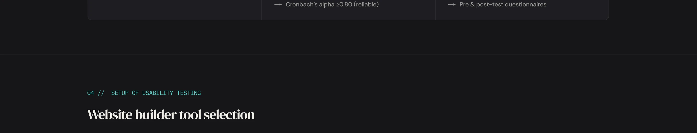
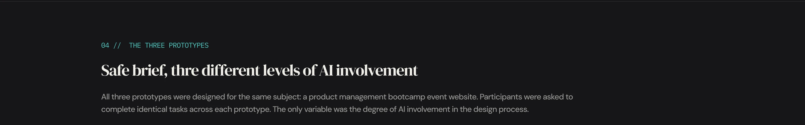
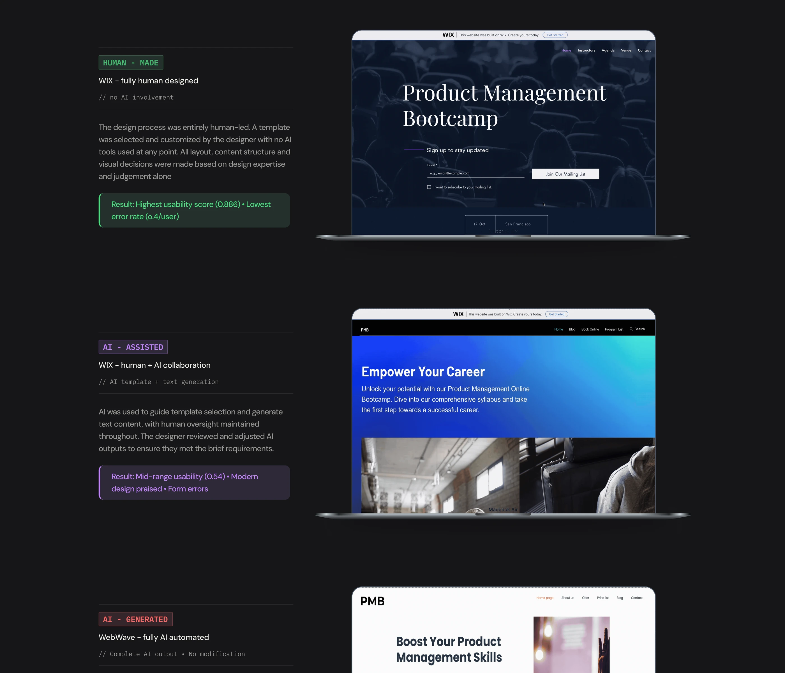
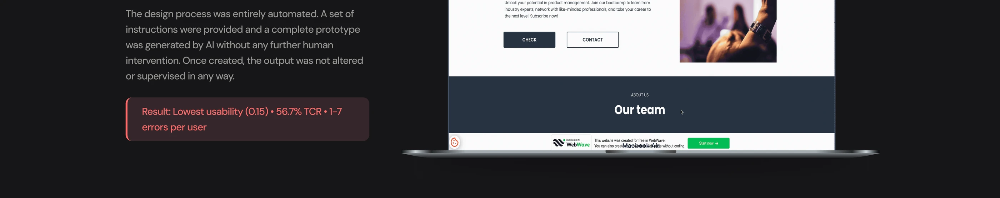
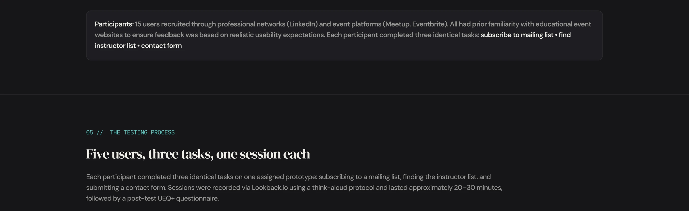
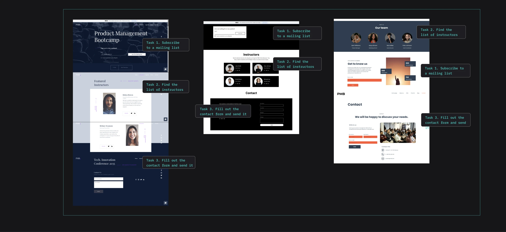
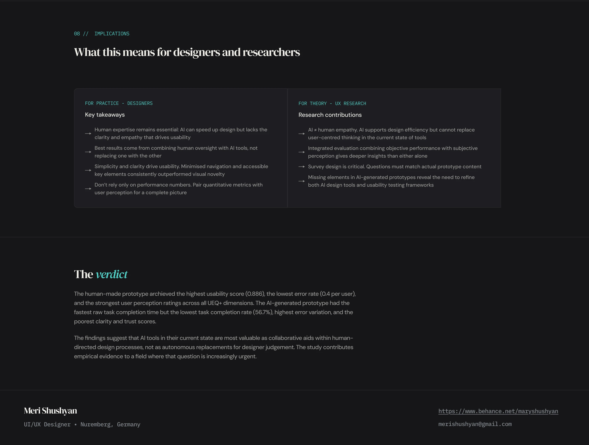

HUMAN-MADE (WIX)
0.89
Highest overall usability score
Best performance across all metrics: clarity, trust, aesthetics, and task success. Most balanced prototype across every measurement dimension.
“Everything felt intuitive and trustworthy”



Google search
Filter
Filter





06 // RESULTS
Across all three measurements dimensions: task completion, error rate, and user perception, the human-made prototype outperformed both AI conditions. The AI-generated prototype performed significantly below expectations despite having the fastest raw task time, due to high task abandonment rates.
HUMAN-MADE (WIX)
0.89
Best performance across all metrics: clarity, trust, aesthetics, and task success. Most balanced prototype across every measurement dimension.
“Everything felt intuitive and trustworthy”
AI-ASSISTED (WIX)
0.54
Modern visual design praised, but contact form confusion (two message fields) caused repeated errors. Mixed feedback on trust and dependability.
“Looks cool but something feels off”
AI-GENERATED (WEBWAVE)
0.15
Fastest raw task time but misleading, as most tasks were abandoned rather than completed. High error variation (1-7 per user)
“I didn’t realise I hadn’t finished the task”
“The study’s most unexpected finding was not that the human-made prototype performed best. It was that the AI-generated prototype’s fastest task masked its worst usability. Speed without clarity is not efficiency.”
// UEQ+ USER PERCEPTION SCORES
HUMAN-MADE (WIX)
AI-ASSISTED (WIX)
AI-GENERATED (WEBWAVE)
“Everything was easy to follow.”
“One element was missing-I didn’t know where to click.”
“ The site looks clean & professional.”
“Looks cool but something feels off”
“Why are there two fields to write the same message?”
“I don’t know if I am subscribing or contacting support.”
“ It looks auto-generated.”
